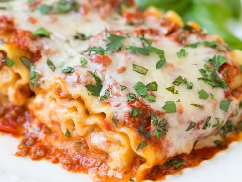

Banana Cake

Description
This banana cake recipe uses fresh mashed bananas and buttermilk for super moist results. It was made for me by a friend while I was visiting her after she had delivered her 11th child. I told her, "I should have baked for you!"
Ingredients
- bananas
- lemon juice
- all-purpose flour
- baking soda
- white sugar
- salt
- eggs
- butter
- vanilla extract
- buttermilk
Steps
- Preheat the oven to 275 degrees F.
- Mix mashed bananas with lemon juice in a small bowl. Mix flour, baking soda, and salt in a medium bowl.
- Cream sugar and butter in a large bowl.
- Beat in eggs one at a time, then stir in vanilla.
- Beat in flour mixture alternately with buttermilk.
- Bake in the preheated oven